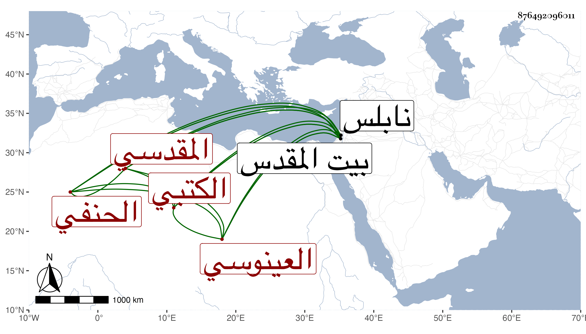

0902Sakhawi.DawLamic.ITO20230111-ara1.EIS1600.876492096011
Biography ID: 876492096011
إبراهيم بن إسحاق بن إبراهيم بن عياد بن محمد برهان الدين أبو إسحاق ابن أبي الفدا العينوسي نسبة لقرية من نابلس المقدسي الحنفي الكتبي ولد في رجب سنة اثنتين وتسعين وسبعمائة ببيت المقدس ونشأ به فقرأ القرآن واشتغل في الفقه والتفسير على القاضي سعد الدين بن الديري وولده بل رأيت سماعه عليه لبعض صحيح مسلم وكذا قرأ في لحديث على الشمس بن المصري وابن ناصر الدين والزين عبد الكريم القلقشندي وآخرين وزعم ابن أبي عديبة أن له إجازة من أبي الخير بن العلائي وتنزل في بعض الجهات وباشر قراءة الحديث بالمسجد الأقصى وكتب بخطه الكثير وتميز في معرفة الشروط ونظم الشعر المتوسط والغالب عليه فيه المجون مع الخير والسمت الحسن والتواضع والتقنع بتجليد الكتب وقد كتب عنه بعض الفضلاء من نظمه ولقيته ببيت المقدس فكتبت عنه قوله :
| في وجه حتى آيات مبينة | فأعجب لآيات حسن قد حوت سورا |
| فنون حاجبه مع صاد مقلته | ونور عارضه قد حير الشعرا |
وقوله :
| أنا المقل وحبي | أذاب قلبي ولوعه |
| أبكي عليه بجهدي | جهد المقل دموعه |
وغير ذلك مما أودعته معجمي ومن نظمه في مسائل الشهادة بالاستفاضة :
| أفهم مسائل ستة وأشهد بها | من غير رؤياها وغير وقوف |
| نسب وموت والولاد وناكح | وولاية القاضي وأصل وقوف |
وكتب للشمس بن المصري :
| يا أيها المولى الذي من أم له | نال منه في الورى ما أمله |
| جئت أشكو لك بعد الحسبله | ضيقة اليد ووسع الجسبله |
فقال له وما هي الجسبلة فقال كثرة العيال كما ذكره الثعالبي في فقه اللغة فوصله مات في يوم الجمعة عشري المحرم سنة أربع وستين رحمه الله .
